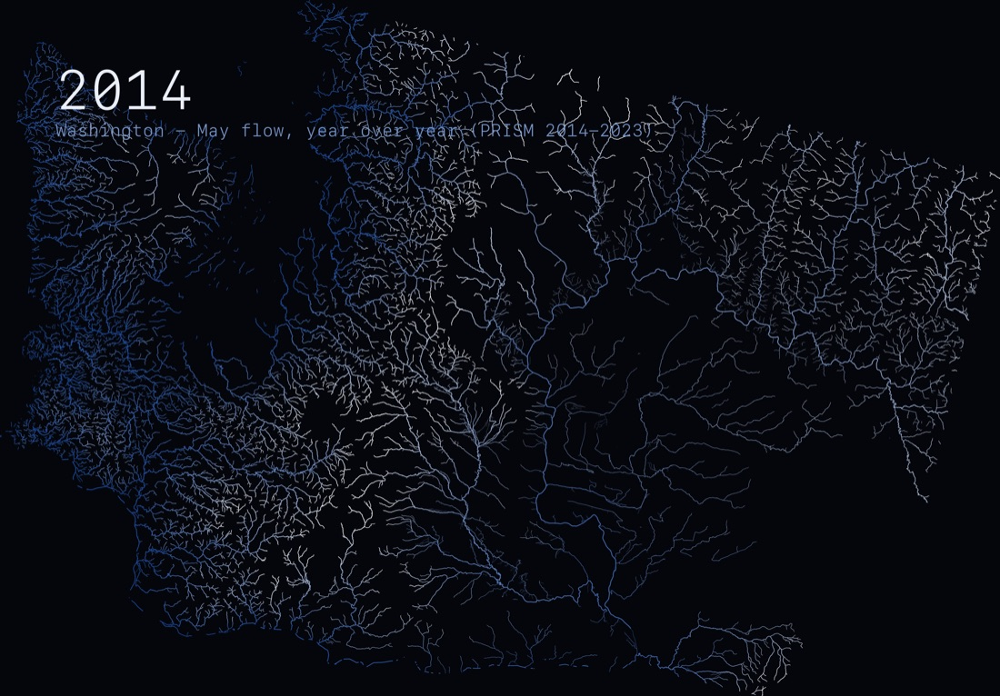

AST-ORD-0042-proof-r1PROOF · CUSTOMER PRIVATE
AST-ORD-0042-proof-r1PROOF · CUSTOMER PRIVATEParent: JOB-ORD-0042-r1
Internal catalog / immutable asset lineage
Public examples, customer reference material, proofs, finals, and evidence stay deliberately separate. A file never needs a filename alone to explain where it came from.
AST-ORD-0042-proof-r1PROOF · CUSTOMER PRIVATE AST-ORD-0042-preview-r1PREVIEW · INTERNALAST-ORD-0042-final-r1FINAL · NOT YET CREATED
AST-ORD-0042-preview-r1PREVIEW · INTERNALAST-ORD-0042-final-r1FINAL · NOT YET CREATED
AST-CAT-0007-exampleCATALOG EXAMPLE · APPROVED PUBLICREF-REQ-0042-01CUSTOMER REFERENCE · PRIVATEORD-0042.manifest.jsonPROVENANCE RECORD · INTERNAL